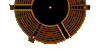

|

|
Die ZEIT.The World as a Threesome
A raw spectacle from an era when clowns didn't need red noses:
"Que-Cir-Que", the first black and white circus.
By Robin Detje
What does not happen: no trumpet player plays a fanfare, no drum rolls are to be heard. No comedian screams with laughter to make us scream with laughter. No glittery leotard-clad gymnasts land in the safety-net after a threefold saumersault (fanfare, drum-roll!) and no troupe of horses carry their feathered headress around the ring.
At the circus, we know what we are expected to feel. The cuteness, the clowns with their greedy desire and the trapeze artist rule over our reflexes. When the need arises, the band leader pitches in with a helping hand. At “Que-Cir-Que” on the other hand, we hear a taped voice chuckle: “That's it! He he he” - Janis Joplin, transplanted from the archives to the big top.
However (typical circus!) somebody will get water spat in their face: first the woman kisses the black pole of the white tent, then she moves close to the man, and spits at him. His features contort, but he does not flinch. The stream of water wets his ear, then his crotch. She humiliates him so to make him love her. She opens her mouth, wide, empty; then kisses the man, steps back - and spits more water in his face.
Towards the end of the show, the tent pole will have its moment of glory and will spray some water itself - alone on a lonely stage, which is barren but for a few props. The stage is round, yet it is not quite a ring in a circus.
So, there is a tent - that much circus we have. There are three artistes, one woman and two men. At the start of the show the stage is empty, deserted. The woman (Emanuelle Jacqueline) appears and opens the trap door to Hades near the central pole. She pulls an arm, a pale and naked worm, from the depths, and fixes it to the pole. The arm takes hold of a small spotlight which hangs from the pole and rotates it so as to illuminate the audience; the subterranean arm, the inquisitive spotlight and us - that is all for the present.
Mankind appears in the holocene. A world inhabited by subterranean creatures and strange orbiting pieces of raw metal. Humanity appears in the form of two men; the longhaired one (Hyacinthe Reisch) drags the bald and practically naked one (Jean-Paul Lefeuvre) around the disc-like stage on an iron sleigh. Ourside the night is probably endless; even more probable is a raging blizzard. Woman however brings light: in each outstretched hand she holds a candle.
The two men turn the sleigh into a see-saw, take a seat, and the competition commences: who shall be the first to see-saw higher and blow out a candle? The longhaired man wins, and earns a kiss. the bald man gets slapped in the face.
This is the primal scene of this circus - a primal circus from an era when clowns did not need to paint their noses red or bellow for all they were worth. A time when objects had a life of their own, and people sometimes seemed to turn into objects. The circus' Holocene: a woman and two men, a see-saw and two candles, a kiss and a slap.
The victor strides forth and the looser has to sweep the stage. But his punishment turns into a lonesome dreamily danced love affair with a broom. Life in ancient times meant playing.
There is no trumpet player to provide the fanfare, there is no band leader to cue our enthusiastic applause. Usually the circus thrives on climax after climax; “Que-Cir-Que” provides us with transitions. the “acts” are not conventional, they are fragile and danced (sometimes also mean and brutal, the triangle- psychodrama continues...). In standard shows the set changes are perceived as annoying, cumbersome necessities, and are thus wasted; here however they are elevated and celebrated with care and affection, and manage to steal the show.
The two men torture themselves for quite some time, as they hang from- and crawl around - the pole, over and under each other, the long haired one with full knowledge of his power, the bald one meek and sad, eyebrows raised to the heavens; suddenly, almost as if by accident, two rubber ropes appear and dangle from the cross beam. Within a moment the woman will swing with amphibian grace from these ropes.
The set change is the highlight. The “act” seems like an superfluous by comparison, as she does the splits over and over, as every incredible transformation is accompanied by a horrible sigh from off-stage. Those who wish to cheer (and who does not feel like cheering at “Que-Cir-Que"”?) should first reassess their reasons for cheering.
Jean-Paul Lefeuvre dances with a white bicycle just as he danced with his broom; he also likes to simply sit on it with legs crossed. And every time he needs a new push of momentum, he - as if by a miracle - always seems to find a collegue from whom he can shove himself onward.
Jean-Paul Lefeuvre is the melancholic one, Hyacinthe Reisch is the raw strong-man, who throws himself around the stage in a huge steel gyro wheel, sweating, as “The Great Pretender” is played over the speakers. Lefeuvre softly seduces his partners, the broom and the cycles, where as Reisch celebrates orgies of strength upon his. And Emanuelle Jacqueline reveals herself as the evening‘s stern dominatrix. She utilises her earrings to fasten a bar to the two rubber ropes, before swinging around the pole one meter above the ground on her adhoc trapeze, always gazing at the pole with desire, yet never quite reaching it, before finally continuing her journey with aquine movements. As cold-bloodedly as she conquered the long haired man at the start, she later flirts with the bald one, then murders her original lover with the aid of her new man. As this little murdurous game illustrates, Que-Cir-Que” is also a theatre of undiluted cruelty.
The dominatrix lays down the rules. A bicycle wheel, which had been rotating wildly on the bald man‘s elbow, is now inserted in a small channel in the pole. She commands its immediate departure with a flick of her stern index finger, and it instantly jumps from its hold and rolls off stage of its own accord. Back into the raging blizzard.
And who is suprised by that? This evening the objects are not merely obedient, they are well mannered too. The spotlight moves aside considerately as Lefeuvre passes by on his trapeze bar. Lacking good manners however and still filled with jealousy, Reisch glues Lefeuvre - his rival - to the mast, as if the bald man were a mere object. For a moment the big top is transformed into the Gulag.
“Que-Cir-Que” is the follow-on project from the “Cirque O” which was so succesful in 1991. The artists are all graduates of Jack Lang‘s Paris Circus academy, and though they wear coloured costumes, we feel as if we have witnessed a black and white spectacle - monochrome manifestations which seem to appear from nothing, dance, play or act for a few minutes, then disappear again from whence they came. What these artists do is usually described with such ugly names as mime and acrobatics, but these tags are soon forgotten as we realise that before us we are witnessing a heart rending scene from our own dreadfully endless lives.
Actually “Que-Cir-Que” is a sad event - the icy breath of the desert can always be felt. And yet, the audience's enthusiasm can hardly be told apart from the frenzy of “Roncalli”. Perhaps the reason for this is the fact that we in the audience are never left alone. During the whole show, there is not one second in which the performers‘ solicitude for themselves, each other, for their props and for the audience abates. We are always aware of the endless night ouside the big top, but we are never alone.
Of course “Que-Cir-Que” boast of the depths of the soul which are bared in the performance, a line from Beckett: “A game, no less” is quoted in the advertising. Nothingness and the game: ideas like this can quickly bring about the collapse of the page in a newspaper - and even more quicker the collapse of a circus show. And so, immediately after the performance, the stage is quickly transformed to a bar, and the radiant artistes deliver free drinks to the members of the public. The blizzard may be raging outside, in here we are having a party. Oh, what good fortune!
A greater fortune it would be, however, to be able to see the “Que-Cir-Que” show every evening; in the role, for example, of the lighting technician who “pulls the strings” for the spotlights, (and who, at the close of the show is deservedly presented with not one, but two drinks).
Unfortunately this job has already been taken: Christoph Gärtner has to be the luckiest theatre technician in the whole of Europe.
|